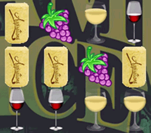
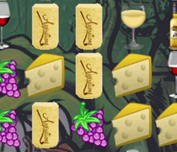
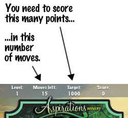

Score points by swiping the wine-related items in the game up, down, left, or right into combinations of three or more of the same kind.
Your combinations can be horizontal:

Or they can be vertical:

At the start of each level, you'll have be given a number of moves and a target score. If you reach the target score within your given number of moves, you'll get to proceed to the next level!

The game ends when you don't achieve the target score within your allotted number of moves.
Sometimes, you might have trouble finding a combination. That's what this button's for:
Press the Hint button and the game will show you a combination that you can make. There's a price for the hint: it costs 10 points.
There may be times where there aren't any combinations on the screen. That's when this button comes in handy:
Press the Shuffle button shuffle the items in the game into new positions. There's a price for shuffling: it costs one move, and you have only one move left, it's game over for you.
And finally, when it's time to return to the real world or drink some wine, you'll want to make use of this button:
Press the Quit button to end the game.
We've been making Florida's best hand-crafted, low-sulphite wines since 2003. All of our wines are made at our family-owned and operated micro-winery located in sunny Clearwater, Florida.
Our wines consist of many of your favorite traditional red and white varietals, as well as a number of fruit-infused and dessert wines. They all start with the finest varietal grapes imported from around the world, which we ferment naturally at our winery.
You can purchase our wines at our winery, or from many wine retail locations throughout Florida. We also offer a wine tasting and tour experience, which gives you an opportunity to learn all about our wines while having a great time.
Visit our website at aspirationswinery.com or call us at (727) 799-WINE to find out more!
Wine Crush was developed by Joey deVilla, who enjoys both writing games for the iPhone and drinking Aspirations Winery's wines. He's partial to the Grande Rosso and the Chocolate-Orange Port. Joey has a technical blog at globalnerdy.com and a personal blog at joeydevilla.com, and he's also on LinkedIn and Twitter.
Wine Crush is based on a "Matching Game" developed by Matthijs Hollemans for the ever-useful RayWenderlich.com site.
The background music for the game is called Mining by Moonlight, and it's the creation of Kevin MacLeod, who has a great site filled with great royalty-free music called incompetech.com. It's licensed under a Creative Commons "By Attribution 3.0" license.